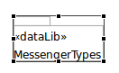

After the selection of a new OpenDDS Diagram you will then be presented with an editor that consists of a canvas and a palette of "libraries" and a Package that can be dragged onto the canvas. An example of this editor is shown in the following figure.

You can open a library that is on the canvas by first selecting it and then double-clicking on it or pressing the Enter key. You can verify it is selected when you see a thick border around the figure with re-sizing handles on it as shown below.
When you open up a library there will be a new editor window in your editor window. See Moving between Diagrams for information on working with multiple diagram editors.
The libraries can optionally be organized by Packages. See Using Packages for more information.
Although the OpenDDS Modeling perspective includes a Properties view exposing the underlying model in the "Core" tab, effort has been made to minimize the need go between the diagram and Properties view. Care should be taken when making modifications in the Properties view since it may be possible to violate certain modeling assumptions that the diagram components are built on.